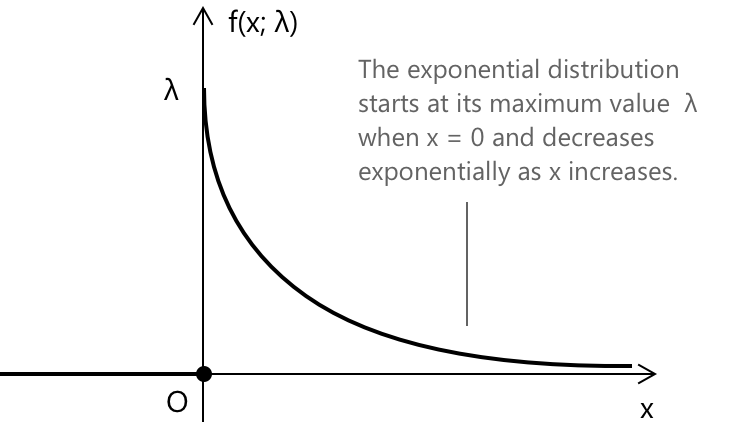

Експоненціальний розподіл
Що таке експоненціальний розподіл ймовірностей
Експоненціальний розподіл характеризує час, що минув між випадковими, незалежними подіями, які відбуваються з постійною середньою інтенсивністю. Його часто застосовують для моделювання часу очікування, наприклад, проміжку перед приходом наступного клієнта або виникненням несправності машини, що забезпечує простий та інтуїтивний спосіб опису процесів, керованих випадковістю та неперервністю в часі. У формальних термінах, якщо задано випадкову змінну \( X \) та додатний дійсний параметр \( \lambda \), експоненціальний розподіл визначається наступною функцією щільності ймовірності:
\[ f(x; \lambda) = \begin{cases} \lambda e^{-\lambda x} & \text{для } x > 0 \\[0.6em] 0 & \text{для } x \le 0 \end{cases} \]
- \( \lambda \) — це параметр інтенсивності, який визначає, як часто відбуваються події.
- Більше значення \( \lambda \) відповідає частішому виникненню подій.
- Менше значення вказує на довший очікуваний час очікування між подіями.
Ця функція представляє неперервну ймовірнісну модель, яка кількісно визначає ймовірність очікування певної кількості часу перед тим, як подія відбудеться в процесі з постійною інтенсивністю виникнення.

З означення експоненціального розподілу, як показано на рисунку вище, ми можемо помітити, що загальна площа під кривою \( f(x; \lambda) \) дорівнює одиниці. Іншими словами, функція щільності ймовірності є нормованою, задовольняючи фундаментальну властивість
\[ \int_{-\infty}^{+\infty} f(x; \lambda)\,dx = 1 \]
Оскільки \( f(x; \lambda) = 0 \) для \( x \le 0 \), визначений інтеграл фактично зводиться до
\[ \int_{0}^{+\infty} \lambda e^{-\lambda x}\,dx = \Bigl[-e^{-\lambda x}\Bigr]_{0}^{+\infty} = 1 \]
Отже, функція щільності ймовірності експоненціального розподілу задовольняє умову нормування
\[ \int_{-\infty}^{+\infty} f(x; \lambda)\,dx = 1 \]
що гарантує, що загальна ймовірність по всій області визначення дорівнює одиниці, як того вимагає будь-який коректний неперервний розподіл ймовірностей.
Сума багатьох незалежних експоненціальних випадкових величин наближається до нормального розподілу, згідно з Центральною граничною теоремою.
Експоненціальний розподіл отримав свою назву від експоненціальної функції, яка формує його щільність ймовірності. Зменшувальний характер кривої \( \lambda e^{-\lambda x} \) показує, як ймовірність спостереження довшого часу очікування зменшується експоненціально, підкреслюючи внутрішній зв'язок між поняттям ймовірності та математичними властивостями експоненціальної функції.
Ключові особливості
-
\[\text{1. } \quad f(x) = \lambda\, e^{-\lambda x} \quad x \ge 0 \]
-
\[\text{2. } \quad \mu = E(X) = \frac{1}{\lambda} \]
-
\[\text{3. } \quad \sigma^{2} = \mathrm{Var}(X) = \frac{1}{\lambda^{2}} \]
-
\[\text{4. } \quad \sigma = \frac{1}{\lambda} \]
Кожен вираз підкреслює ключову властивість експоненціального розподілу, показуючи, як він моделює час очікування між подіями, як його середнє значення та варіативність залежать від параметра інтенсивності \(\lambda\), і як його властивість відсутності пам'яті відрізняє його від інших неперервних розподілів.
Математичне сподівання та дисперсія експоненціального розподілу
Як було зазначено в розділі про неперервні випадкові величини, математичне сподівання неперервної випадкової величини забезпечує міру центральної тенденції розподілу і визначається як:
\[ \mu = E(X) = \int_{-\infty}^{+\infty} x\,f(x)\,dx \]
Цей вираз є загальним і застосовується до будь-якого неперервного розподілу, де \( f(x) \) позначає функцію щільності ймовірності випадкової величини \( X \). У конкретному випадку експоненціального розподілу математичне сподівання обчислюється як
\[ \mu = E(X) = \int_{0}^{+\infty} x\,\lambda e^{-\lambda x}\,dx = \frac{1}{\lambda} \]
Цей результат представляє середній час очікування між двома послідовними подіями в процесі, що відбувається з постійною інтенсивністю \( \lambda \).
Дисперсію експоненціального розподілу можна отримати з загального означення дисперсії для неперервних випадкових величин:
\[ \sigma^2 = E(X^2) - [E(X)]^2 \]
Використовуючи відповідний інтегральний вираз і підставляючи експоненціальну функцію щільності, маємо:
\[ E(X^2) = \int_{0}^{+\infty} x^2 \lambda e^{-\lambda x}\,dx = \frac{2}{\lambda^2} \]
Отже, дисперсія дорівнює
\[ \sigma^2 = \frac{2}{\lambda^2} - \left(\frac{1}{\lambda}\right)^2 = \frac{1}{\lambda^2} \]
Це показує, що мінливість експоненціального розподілу зменшується зі збільшенням параметра інтенсивності \( \lambda \), що означає, що вища частота подій відповідає коротшому та стабільнішому часу очікування.
Функція виживання експоненціального розподілу
Функція виживання експоненціального розподілу виражає ймовірність того, що випадкова величина \( X \) набуває значення, більшого за заданий поріг \( x \). Вона визначається як доповнення до функції розподілу:
\[ S(x) = P(X > x) = 1 – F(x) \]
Для експоненціального розподілу з параметром інтенсивності \( \lambda > 0 \) функція виживання має вигляд
\[ S(x) = e^{-\lambda x} \quad x \ge 0 \]
Ця функція показує, що ймовірність «виживання» після певного часу зменшується експоненціально зі збільшенням \( x \). Іншими словами, чим довше ми чекаємо, тим менша ймовірність того, що подія ще не відбулася.
Відсутність пам'яті
Важливою властивістю випадкової величини \( X \), що має експоненціальний розподіл, є так звана властивість відсутності пам'яті. Цю характеристику можна виразити рівністю
\[ P(X > s + t \mid X > s) = P(X > t) \]
що означає, що ймовірність очікування додаткового часу \( t \) не залежить від того, скільки часу \( s \) вже минуло. Іншими словами, експоненціальний розподіл «забуває» про минулі події, що робить його унікальним серед неперервних розподілів ймовірностей.
Виходячи з означення умовної ймовірності, ми можемо записати:
\[ P(X > s + t \mid X > s) = \frac{P(X > s + t)}{P(X > s)} \]
Підставляючи функцію виживання експоненціального розподілу, отримаємо:
\[ \begin{align} P(X > s + t \mid X > s) &= \frac{\int_{s+t}^{+\infty} \lambda e^{-\lambda x}\,dx} {\int_{s}^{+\infty} \lambda e^{-\lambda x}\,dx} \\[0.6em] &= \frac{e^{-\lambda (s + t)}}{e^{-\lambda s}} \\[0.6em] &= e^{-\lambda t} \end{align} \]
Нарешті, зауваживши, що \( e^{-\lambda t} = P(X > t) \), ми можемо зробити висновок, що
\[ P(X > s + t \mid X > s) = P(X > t) \]
Це підтверджує, що експоненціальний розподіл не має пам'яті про минулі події. Ймовірність очікування додаткового часу \( t \) залишається такою самою, незалежно від того, скільки часу \( s \) вже минуло.
Приклад 1
Певний тип лампочки має термін служби, що підпорядковується експоненціальному розподілу з параметром інтенсивності \( \lambda = 0.002 \) відмов за годину.
- Знайти ймовірність того, що лампочка прослужить більше 400 годин.
- Визначити ймовірність того, що лампочка прослужить від 200 до 600 годин.
- Обчислити математичне сподівання терміну служби та дисперсію тривалості роботи лампочки.
Щоб знайти ймовірність того, що лампочка працюватиме більше 400 годин, скористаємося функцією виживання експоненціального розподілу:
\[ P(X > x) = e^{-\lambda x} \]
Підставляючи задане значення \( \lambda = 0.002 \) та \( x = 400 \), отримаємо
\[ P(X > 400) = e^{-0.002 \times 400} = e^{-0.8} \approx 0.4493 \]
Це означає, що існує приблизно 44,9% ймовірності того, що лампочка прослужить понад 400 годин.
Щоб визначити ймовірність того, що термін служби лампочки становить від 200 до 600 годин, обчислимо різницю між ймовірностями того, що вона прослужить більше 200 годин і більше 600 годин:
\[ \begin{align} P(200 < X < 600) &= P(X > 200) - P(X > 600) \\[0.6em] &= e^{-0.002 \times 200} – e^{-0.002 \times 600} \\[0.6em] &= e^{-0.4} - e^{-1.2} \approx 0.6703 – 0.3010 = 0.3693 \end{align} \]
Таким чином, існує приблизно 36,9% ймовірності того, що лампочка працюватиме від 200 до 600 годин.
Математичне сподівання терміну служби лампочки, що підпорядковується експоненціальному розподілу, визначається як обернена величина до параметра інтенсивності:
\[ E(X) = \frac{1}{\lambda} = \frac{1}{0.002} = 500 \quad \text{годин} \]
Це означає, що в середньому очікується, що лампочка прослужить 500 годин до виходу з ладу.
Дисперсія, яка вимірює розсіювання розподілу, отримується як квадрат середнього терміну служби:
\[ \sigma^2 = \frac{1}{\lambda^2} = \frac{1}{(0.002)^2} = 250000 \]
Відповідно, середньоквадратичне відхилення становить:
\[ \sigma = \sqrt{\sigma^2} = 500 \ \text{годин} \]
Підсумовуючи результати вправи, маємо:
\[ \begin{aligned} &P(X > 400) = 0.4493 \\[6px] &P(200 < X < 600) = 0.3693 \\[6px] &E(X) = 500 \ \text{годин} \\[6px] &\sigma^2 = \mathrm{Var}(X) = 250000 \\[6px] &\sigma = 500 \ \text{годин} \end{aligned} \]
Зв'язок із гамма-розподілом
Експоненціальний розподіл можна розглядати як один із найпростіших особливих випадків гамма-розподілу. Зокрема, встановивши параметр форми гамма-розподілу \( \alpha = 1 \), щільність гамма-розподілу:
\[ G(x;\alpha,\beta) = \frac{1}{\beta^{\alpha}\Gamma(\alpha)}\, x^{\alpha – 1} e^{-x/\beta} \quad x>0 \]
значно спрощується. Коли \( \alpha = 1 \), маємо \( \Gamma(1) = 1 \), а доданок \( x^{\alpha - 1} \) стає \( x^{0} = 1 \). Таким чином, щільність зводиться до
\[ G(x;1,\beta)=\frac{1}{\beta} e^{-x/\beta} \quad x>0 \]
що є саме експоненціальним розподілом із параметром масштабу \( \beta \). Якщо ми перейдемо до параметризації за інтенсивністю, встановивши \( \lambda = 1/\beta \), той самий вираз набуде вигляду \[ G(x;\lambda)=\lambda\, e^{-\lambda x} \quad x>0 \]
Це показує, що експоненціальний розподіл — це просто гамма-розподіл із параметром форми, що дорівнює одиниці.